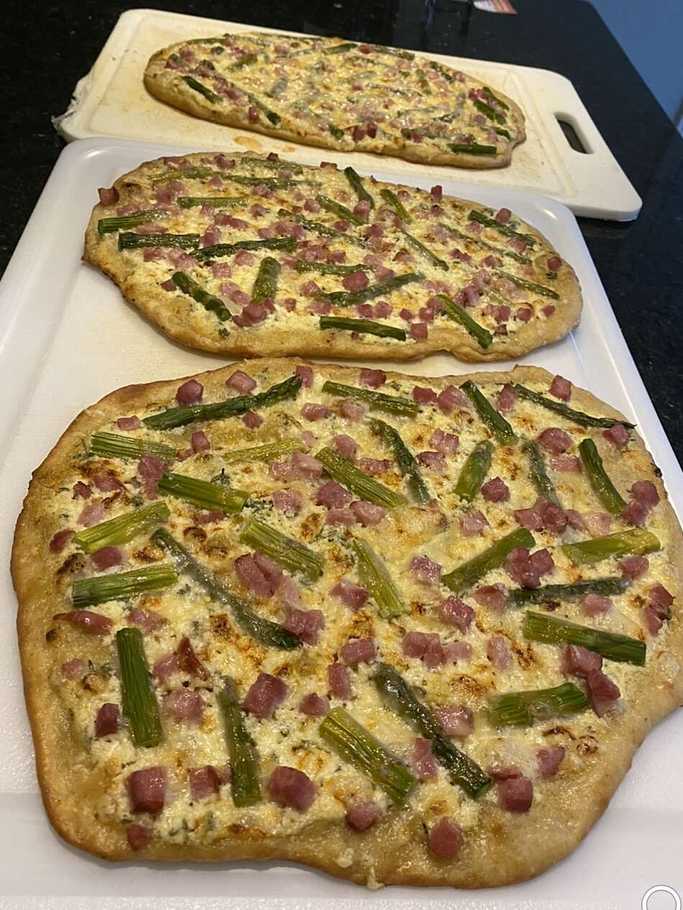

Pizza with HAM

Prep: 20mins
Cook: 12 mins
Additional: 5 mins
Total: 37 mins
Servings: 2
Yield: 1 pizza
Ingredietns
1 cup fresh asparagus, trimmed
1/2 cup ricotta cheese
1/4 cup olive oil
2 cloves garlic,minced
1 pinch red pepper flakes,or to taste
salt and freshlz ground black pepper to taste
2 tablespoons heavy cream
2 tablespoons chopped herbs,such as basil,parsley,rosemary,thyme(Optional)
1 pound pizza dough (see footnote fot recipe link)
1 tablespoon flour,for dusting
1/2 cup diced smoked ham
1/2 cup shredded sharp white Cheddar cheese
1 tablespoon finely grated Parmigiano-Reggiano cheese
Steps (Directions)
Preheat an oven to 550 degrees F (285 degrees C).
Bring a large pot of lightly salted water to a boil. Add asparagus and cook uncovered until just tender, about 2 minutes. Drain in a colander, then immediately immerse in ice water for several minutes. Once asparagus is cold, drain well and set aside.
Combine ricotta, olive oil, garlic, red pepper flakes, salt, black pepper, and heavy cream in a small bowl. Stir in fresh herbs (if using) and set aside.
To shape the pizza dough, sprinkle the countertop and dough surface with flour and lightly pat flat. Use a rolling pin to form a thin disk about 9 inches in diameter. Transfer to a baking sheet.
Spread ricotta mixture over crust, top with ham and asparagus. Sprinkle with Cheddar and Parmigiano-Reggiano cheeses.
Place baking sheet on the bottom rack of the preheated oven and bake for 5 minutes. Transfer the baking sheet to the top rack and bake for an additional 5 minutes.
HOME